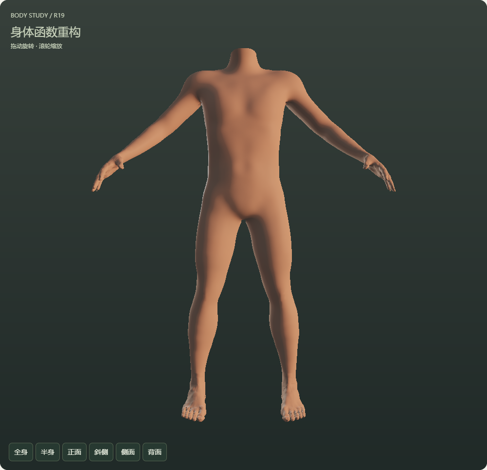
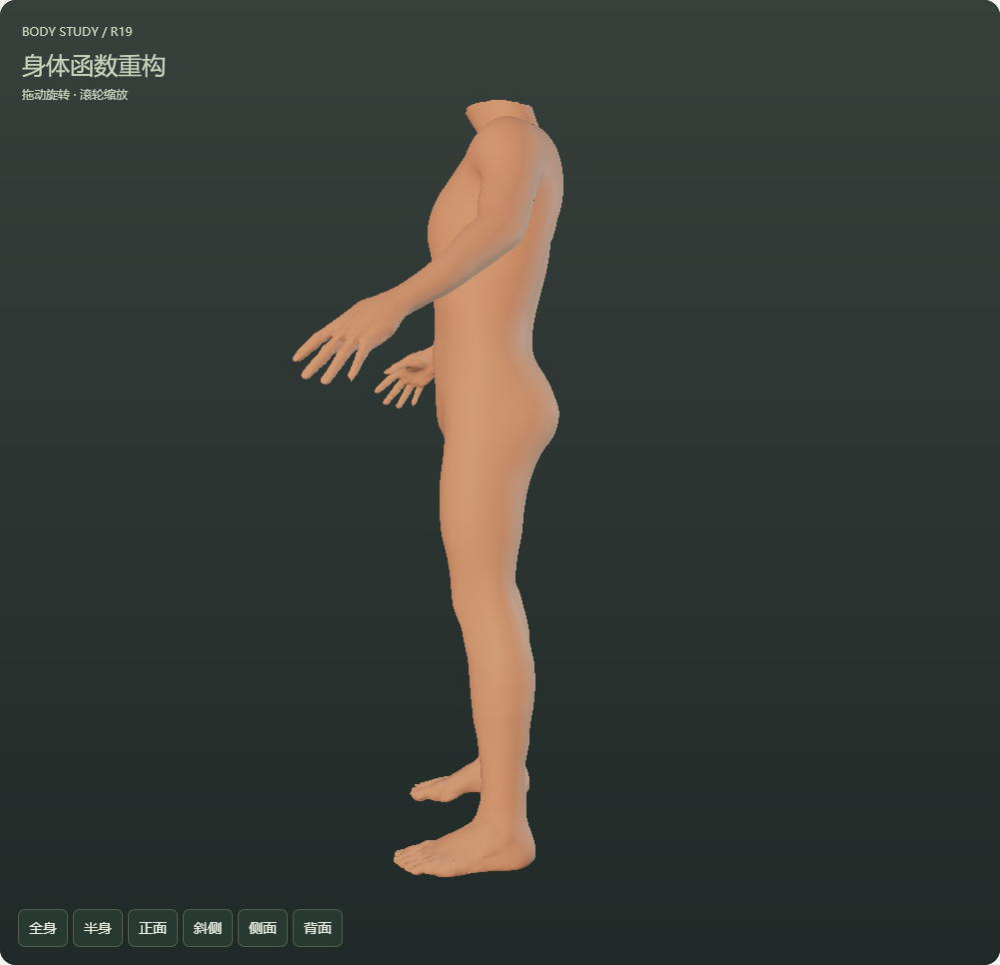
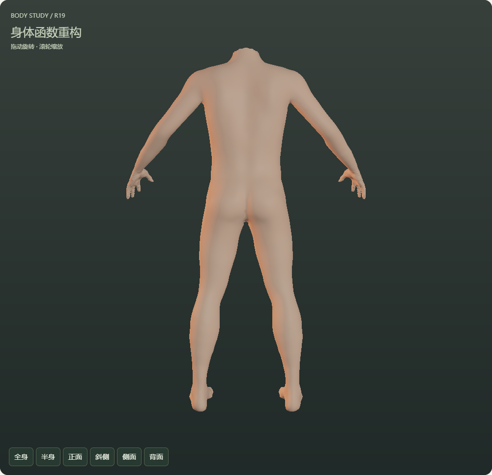
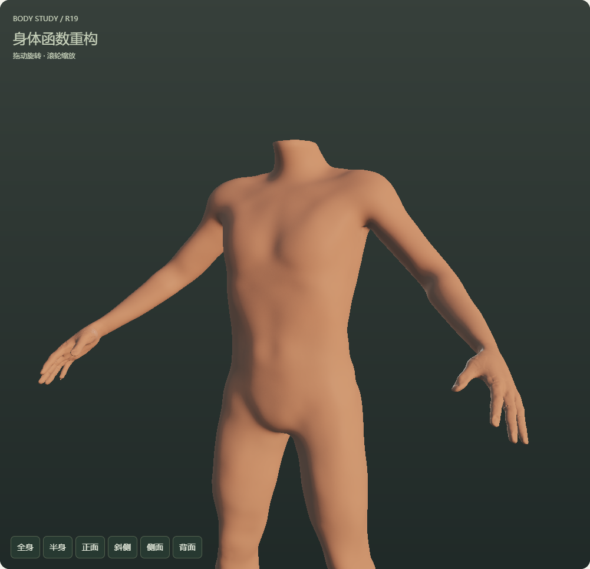
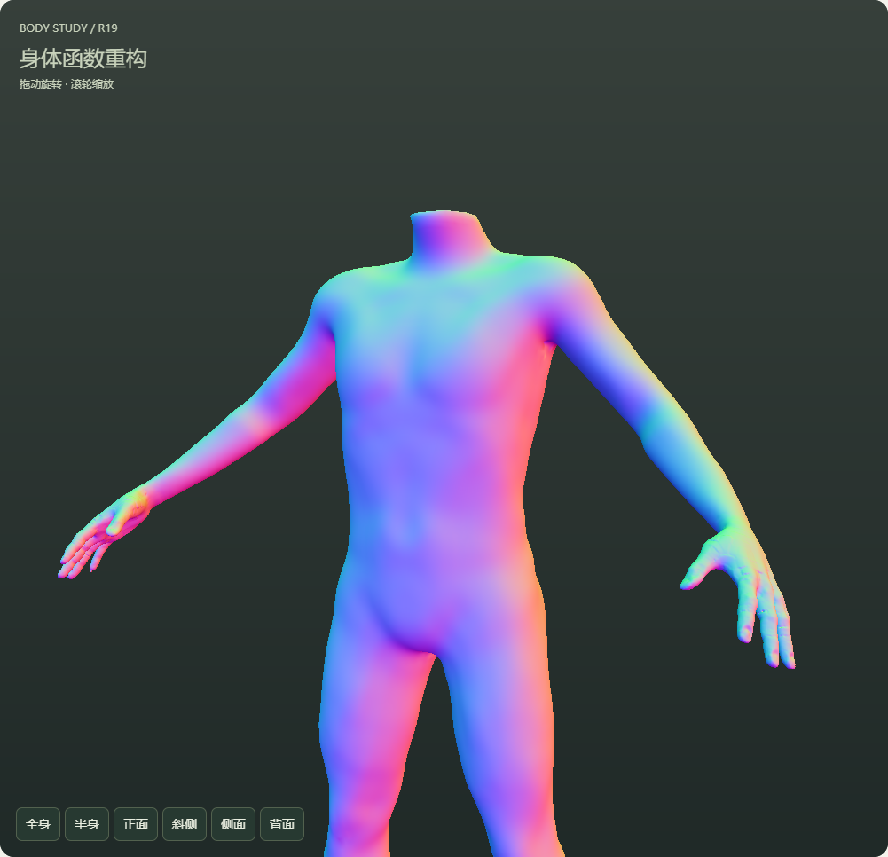
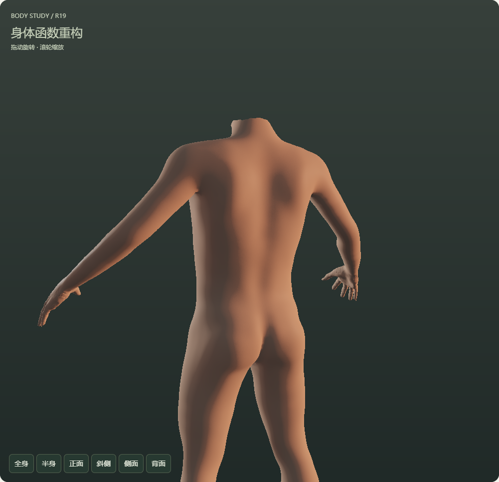

HUMAN / BODY / R19躯干大形与肩带过渡。
本轮继续第一优先级，修改实际胸廓、肩背、腰腹和骨盆宽面，并让表面方向随同一结构变化。R18与原人物保持可回退，头部仍由独立板块处理。
打开 R19 可操作三维身体 · 打开原 R18 · 本轮尺度、来源与失败记录
本轮：补平过深的胸前中线转折，调整胸廓下缘、侧腰、肩胛与骨盆，并补上肩部外侧过渡；丰满时减弱结构定义，保留全部原控制。
完成边界：本轮有限体型、动作和档案检查已完成；整体解剖仍简化，大幅度肩腋、髋部、腕部及手足质量需要继续，尚未完成整身视觉与自主母体验收。
同条件 R18 / R19 对照
拖动分界比较实际形体。R18状态在R19页面内还原，其正、侧、背和半身画布已与原R18逐像素核对一致。
最终候选的体型与动作实拍

正面全身
侧面全身
背面全身斜前半身动作只对应实际测试值：A躯干Y/X分量12°、肩部Z分量30°；B的spine_twist1通道0.25、l_uparm_rz通道0.35。没有将这些分量测试扩称为完整关节活动范围。
宽面与方向的分离观察

当前形体的几何法线着色，同一材质与灯光。
隐式形体的梯度方向，辅助检查形体。
补充观察：原两盏灯的方位同时旋转180°，强度、颜色和表面设置不变。R18对照，同样的补充灯位；产品默认灯光没有改变。检查结果与实际限制
| 项目 | 结果 |
|---|
| 数值与实际运行 | 27项数值检查、17项浏览器检查通过，最终候选71张三维实拍。旧R18多体型逐值兼容，四视图画布完全一致。 |
| 支撑与方向 | 两套驱动保持原支撑，修正随完整影响权重移动；法线通过独立的变形切线叉乘核对。有限取样的区域映射最小雅可比行列式约0.865，不是整个定义域的证明。 |
| 参数与档案 | 原1916项目录、965项身体控制、34对左右联动保留；批量操作、新档下载和同一文件重复载入通过，旧档不自动升级新造型，头部变量保留。 |
| 表示与来源 | 实际绘制仍只有点图元，没有人物三角面。结构函数由项目编写，基础母体、权重和校准数据仍保留原来源；不宣称全身自主数据已经完成。 |
下一步沿本轮整体对照继续处理肩腋到上臂及髋部的动作过渡，再逐步扩展至肘膝、腕踝与手足。微观肌理、头部和总平台整合保持原路线顺序。
当前运行文件SHA256：0442474d248e357541d8738ecfceaaff7748cbc6e6910c4c17612a44a9256d7f
最终截图完成：2026-10-23T08:54:24.040Z
源码、数据、当前截图和原R18哈希均核对；前期候选另存于qa/structure-r19-trial1/和trial2/，不混作最终候选实拍。